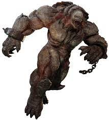

Gears of War 1 (Locust)
Desgraciado.
Los desgraciados son de los enemigos más pequeños y faciles de acabar en la horda locust, pero compensan su debilidad con numeros, atacando en manada.
Drone.
Dron o drones son la columna vertebral por la que se conforma la horda locust, los drones basicos carecen de experiencia en batallas y por lo regular son usados como carne de cañon.
Artillero.
El artillero locust es una larba de la horda bien entrenada y encargada de manejar las torretas colocadas en puntos estrategicos por los locust, su diseño no varia demasiado de la larva comun.
Granadero.
Los granaderos locust son mienbros de la horda locust a los que se les equipa por recular con: granadas de fragmentación, una escopeta gansher y una pistola block. Por lo regular no llevan armadura del pecho hacia arriba.
Granadero de Elite.

Estos locust no se diferencian tanto de su rango más bajo del ejercito locust, lo unico que los diferencia es que los "Granaderos de Elite", poseen más resistencia y vitalidad que los granaderos normales.
Guardian Theron.

Los guardias theron son la contraparte de los conocidos como "Guardianes Onixe" en la horda locust, ellos son locust de elite que por lo regular son asignados para llevar a cabo misiones importantes y proteger a locust importantes un ejemplo sería: el General Raam y la Reina Myrra.
Centinela Theron.

Los centinelas theron son tipos enemigos mortiferos cuerpo a cuerpo, estan equipados con armaduras de cuerpo completo que los protejen de las balas, ademas de que portan un gran machete que sirve para cortar la carne de sus enemigos.
Corpser.
Los "Corpser", son locust enormes con forma de aracnidos que fueron creados por el general Hukon. Fueron usados en las guerras locust para crear agujeros de emergencia de los cuales provenian los locust.
Boomer.
Para la horda locust los "Boomer", son aliados formidables que portan armas con una potencia de fuego alta que pueden acabar con un escuadron de humanos de la COG(Cualición de Gobiernos Ordenados) de un solo tiro.
Berserk.

Las Berserkes son locust blindadas, altamente peligrosas que pueden decidir el curso de una batalla por su aparición, estas musculosas bestias soportan todo tipo de proyectiles, las unicas formas de matarlas es con una gran cantidad de fuego para ablandecer su coraza o con ataques del martillo del alma.
Kryl.
Los Kryl son locust nocturnos que son realmente sensibles ante la luz o fuego, estos fueron el terror de la humanidad durante varios años hasta que fueron diesmados por la bomba de masa lijera, lanzada por Marcus Fenix en un tren en movimiento.
Brumak.
Los Brumak son locust gigantes fuertemente equipados, ellos son armas de destrucción masiva andantes con forma de dinosaurio.
Reaver.
Los reaver son locust voladores que son montados por drones capacitados de montarlos, estos estan equipados por dos cañones que lanzan cohetes a sus objetivos.